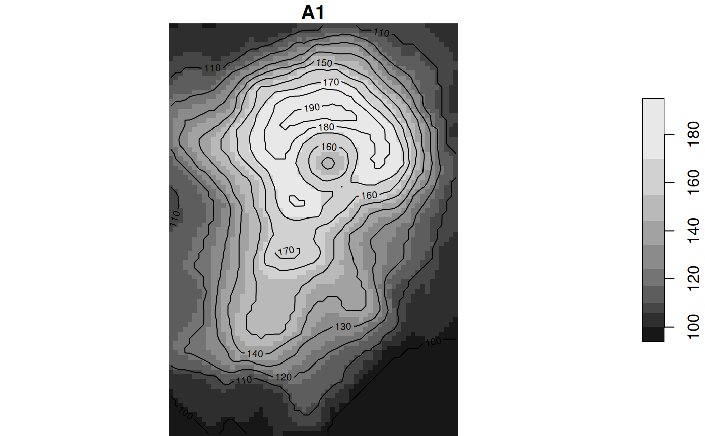

plot contours of a stars object
# S3 method for stars contour(x, ...)
| x | object of class |
|---|---|
| ... | other parameters passed on to contour |
this uses the R internal contour algorithm, which (by default) plots contours; st_contour uses the GDAL contour algorithm that returns contours as simple features.
d = st_dimensions(x = 1:ncol(volcano), y = 1:nrow(volcano)) r = st_as_stars(t(volcano)) r = st_set_dimensions(r, 1, offset = 0, delta = 1) r = st_set_dimensions(r, 2, offset = 0, delta = -1) plot(r, reset = FALSE)